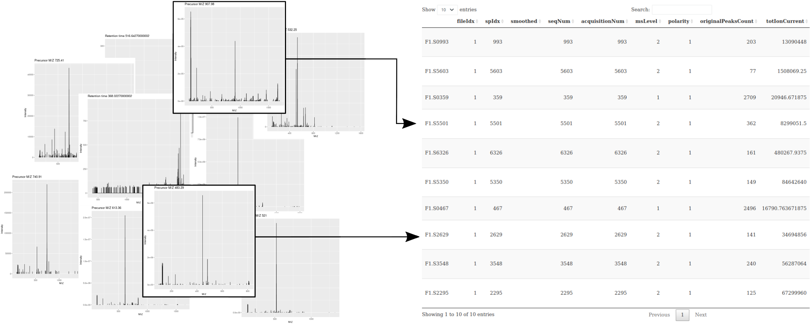
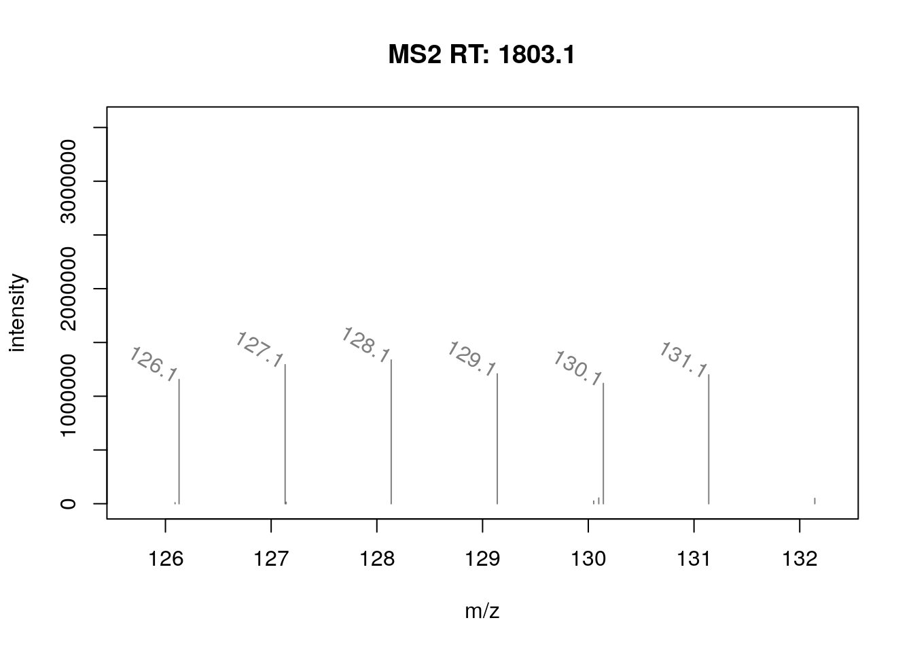
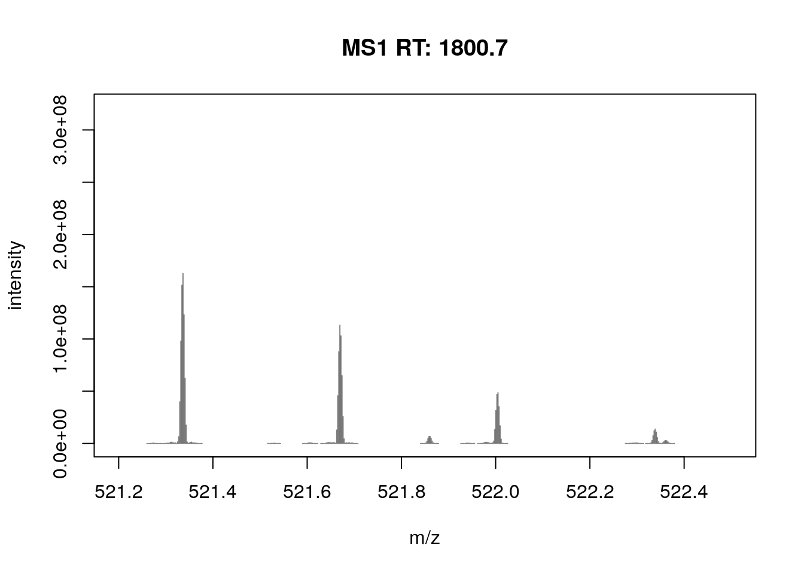
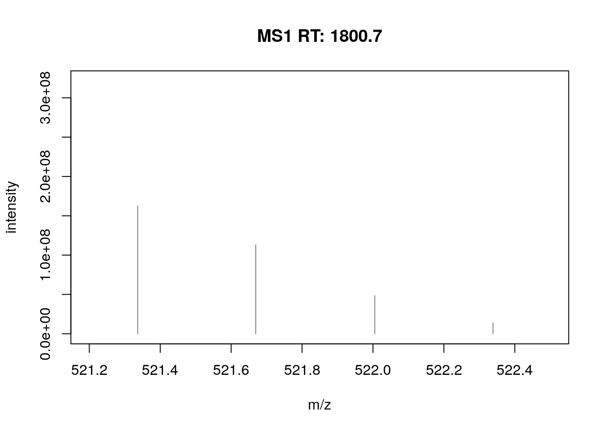
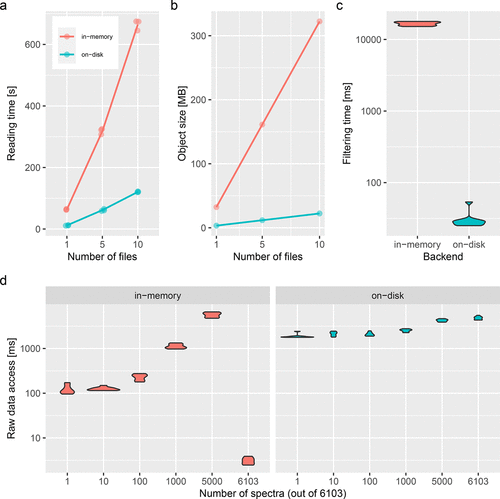

2 Raw MS data
In this section, we will learn how to read raw data in one of the commonly used open formats (mzML, mzXML, netCDF or mgf) into R.
2.1 What is raw data in R
When we manipulate complex data, we need a way to abstract it.
The abstraction saves us from having to know about all the details of that data and its associated metadata. In R, we think of MS data as illustrated on the figure below (taken from (Gatto, Gibb, and Rainer 2020)): a metadata table and a set of raw spectra. This allows to rely on a few easy-to-remember conventions to make mundane and repetitive tasks trivial and be able to complete more complex things easily. Abstractions provide a smoother approach to handle complex data using common patterns.
2.1.1 The Spectra class
We are going to use the Spectra package as an abstraction to raw mass spectrometry data.
Spectra is part of the R for Mass Spectrometry initiative. It defines the Spectra class that is used as a raw data abstraction, to manipulate MS data and metadata. The best way to learn about a data structure is to create one by hand.
Let’s create a DataFrame1 containing MS levels, retention time, m/z and intensities for 2 spectra:
spd <- DataFrame(msLevel = c(1L, 2L), rtime = c(1.1, 1.2))
spd$mz <- list(c(100, 103.2, 104.3, 106.5), c(45.6, 120.4, 190.2))
spd$intensity <- list(c(200, 400, 34.2, 17), c(12.3, 15.2, 6.8))
spd
## DataFrame with 2 rows and 4 columns
## msLevel rtime mz intensity
## <integer> <numeric> <list> <list>
## 1 1 1.1 100.0,103.2,104.3,... 200.0,400.0, 34.2,...
## 2 2 1.2 45.6,120.4,190.2 12.3,15.2, 6.8And now convert this DataFrame into a Spectra object:
sp0 <- Spectra(spd)
sp0
## MSn data (Spectra) with 2 spectra in a MsBackendMemory backend:
## msLevel rtime scanIndex
## <integer> <numeric> <integer>
## 1 1 1.1 NA
## 2 2 1.2 NA
## ... 16 more variables/columns.Exercise
Explore the newly created object using:
-
spectraVariablesto extract all the metadata variables. Compare these to the spectra variables available from the previous example. -
spectraDatato extract all the metadata. -
peaksDatato extract a list containing the raw data. -
[to create subsets.
2.1.2 Spectra from mzML files
Let’s now create a new object using the mzML data previously downloaded and available in the mzf file.
library(rpx)
fn <- "TMT_Erwinia_1uLSike_Top10HCD_isol2_45stepped_60min_01-20141210.mzML"
px <- PXDataset("PXD000001")
## Loading PXD000001 from cache.
mzf <- pxget(px, fn)
## Loading TMT_Erwinia_1uLSike_Top10HCD_isol2_45stepped_60min_01-20141210.mzML from cache.
mzf
## [1] "/root/.cache/R/rpx/d17f90d691_TMT_Erwinia_1uLSike_Top10HCD_isol2_45stepped_60min_01-20141210.mzML"
sp <- Spectra(mzf)
sp
## MSn data (Spectra) with 7534 spectra in a MsBackendMzR backend:
## msLevel rtime scanIndex
## <integer> <numeric> <integer>
## 1 1 0.4584 1
## 2 1 0.9725 2
## 3 1 1.8524 3
## 4 1 2.7424 4
## 5 1 3.6124 5
## ... ... ... ...
## 7530 2 3600.47 7530
## 7531 2 3600.83 7531
## 7532 2 3601.18 7532
## 7533 2 3601.57 7533
## 7534 2 3601.98 7534
## ... 33 more variables/columns.
##
## file(s):
## d17f90d691_TMT_Erwinia_1uLSike_Top10HCD_isol2_45stepped_60min_01-20141210.mzMLExercise
- Repeat the data manipulations above.
- Check the number of scans in the object with
length(). - Note the difference in the first line when showing the object in the console. We will get back to this idea of backend later.
Mass spectrometry data in Spectra objects can be thought of as a list of individual spectra, with each spectrum having a set of variables associated with it. Besides core spectra variables (such as MS level or retention time) an arbitrary number of optional variables can be assigned to a spectrum. The core spectra variables all have their own accessor method and it is guaranteed that a value is returned by it (or NA if the information is not available). The core variables and their data type are (alphabetically ordered):
-
acquisitionNum
integer(1): the index of acquisition of a spectrum during a MS run. -
centroided
logical(1): whether the spectrum is in profile or centroid mode. -
collisionEnergy
numeric(1): collision energy used to create an MSn spectrum. -
dataOrigin
character(1): the origin of the spectrum’s data, e.g. the mzML file from which it was read. -
dataStorage
character(1): the (current) storage location of the spectrum data. This value depends on the backend used to handle and provide the data. For an in-memory backend like theMsBackendMemorythis will be"<memory>", for an on-disk backend such as theMsBackendHdf5Peaksit will be the name of the HDF5 file where the spectrum’s peak data is stored. -
intensity
numeric: intensity values for the spectrum’s peaks. -
isolationWindowLowerMz
numeric(1): lower m/z for the isolation window in which the (MSn) spectrum was measured. -
isolationWindowTargetMz
numeric(1): the target m/z for the isolation window in which the (MSn) spectrum was measured. -
isolationWindowUpperMz
numeric(1): upper m/z for the isolation window in which the (MSn) spectrum was measured. -
msLevel
integer(1): the MS level of the spectrum. -
mz
numeric: the m/z values for the spectrum’s peaks. -
polarity
integer(1): the polarity of the spectrum (0and1representing negative and positive polarity, respectively). -
precScanNum
integer(1): the scan (acquisition) number of the precursor for an MSn spectrum. -
precursorCharge
integer(1): the charge of the precursor of an MSn spectrum. -
precursorIntensity
numeric(1): the intensity of the precursor of an MSn spectrum. -
precursorMz
numeric(1): the m/z of the precursor of an MSn spectrum. -
rtime
numeric(1): the retention time of a spectrum. -
scanIndex
integer(1): the index of a spectrum within a (raw) file. -
smoothed
logical(1): whether the spectrum was smoothed.
For details on the individual variables and their getter/setter function see the help for Spectra (?Spectra). Also note that these variables are suggested, but not required to characterize a spectrum. Also, some only make sense for MSn, but not for MS1 spectra.
In addition to the core spectra variables it is also possible to add additional spectra variables to a Spectra object. As an example we add below a spectra variable representing the retention times in minutes to the object. This information can then be extracted again using the $ notation (similar to accessing a column in a data.frame, i.e., $ and the name of the spectra variable).
Exercise
- Extract a set of spectra variables using the accessor (for example
msLevel(.)) or using the$notation (for example.$msLevel). - How many MS level are there, and how many scans of each level?
- Extract the index of the MS2 spectrum with the highest base peak intensity.
- Are the data centroided or in profile mode?
- Pick a spectrum of each level and visually check whether it is centroided or in profile mode. You can use the
plotSpectra()function to visualise peaks and set the m/z range with thexlimarguments.
Exercise
Using the first raw data file starting with MS3TMT10, answer the following questions:
- How many spectra are there in that file?
- How many MS levels, and how many spectra per MS level?
- What is the index of the MS2 spectrum with the highest precursor intensity?
- Plot one spectrum of each level. Are they centroided or in profile mode?
These objects and their manipulations are not limited to single files or samples. Below we load data from two mzML files. The MS data from both files in the Spectra is organized linearly (first all spectra from the first file and then from the second). The dataOrigin function can be used to identify spectra from the different data files.
fls <- dir(system.file("sciex", package = "msdata"), full.names = TRUE)
sp_sciex <- Spectra(fls)
table(dataOrigin(sp_sciex))
##
## /usr/local/lib/R/site-library/msdata/sciex/20171016_POOL_POS_1_105-134.mzML
## 931
## /usr/local/lib/R/site-library/msdata/sciex/20171016_POOL_POS_3_105-134.mzML
## 9312.1.3 Backends
Backends allow to use different backends to store mass spectrometry data while providing via the Spectra class a unified interface to use that data. With the setBackend function it is possible to change between different backends and hence different data representations. The Spectra package defines a set of example backends but any object extending the base MsBackend class could be used instead. The default backends are:
-
MsBackendMzR: this backend keeps only general spectra variables in memory and relies on the mzR package to read mass peaks (m/z and intensity values) from the original MS files on-demand.
sp_sciex
## MSn data (Spectra) with 1862 spectra in a MsBackendMzR backend:
## msLevel rtime scanIndex
## <integer> <numeric> <integer>
## 1 1 0.280 1
## 2 1 0.559 2
## 3 1 0.838 3
## 4 1 1.117 4
## 5 1 1.396 5
## ... ... ... ...
## 1858 1 258.636 927
## 1859 1 258.915 928
## 1860 1 259.194 929
## 1861 1 259.473 930
## 1862 1 259.752 931
## ... 33 more variables/columns.
##
## file(s):
## 20171016_POOL_POS_1_105-134.mzML
## 20171016_POOL_POS_3_105-134.mzML-
MsBackendMemoryandMsBackendDataFrame: the full mass spectrometry data is stored (in-memory) within the object. Keeping the data in memory guarantees high performance but has also, depending on the number of mass peaks in each spectrum, a much higher memory footprint.
setBackend(sp_sciex, MsBackendMemory())
## MSn data (Spectra) with 1862 spectra in a MsBackendMemory backend:
## msLevel rtime scanIndex
## <integer> <numeric> <integer>
## 1 1 0.280 1
## 2 1 0.559 2
## 3 1 0.838 3
## 4 1 1.117 4
## 5 1 1.396 5
## ... ... ... ...
## 1858 1 258.636 927
## 1859 1 258.915 928
## 1860 1 259.194 929
## 1861 1 259.473 930
## 1862 1 259.752 931
## ... 33 more variables/columns.
## Processing:
## Switch backend from MsBackendMzR to MsBackendMemory [Tue Nov 14 16:58:38 2023]-
MsBackendHdf5Peaks: similar toMsBackendMzRthis backend reads peak data only on-demand from disk while all other spectra variables are kept in memory. The peak data are stored in Hdf5 files which guarantees scalability.
With the example below we load the data from a single mzML file and use a MsBackendHdf5Peaks backend for data storage. The hdf5path parameter allows us to specify the storage location of the HDF5 file.
sp_hdf5 <- setBackend(sp_sciex, MsBackendHdf5Peaks(), hdf5path = tempdir())
sp_hdf5
## MSn data (Spectra) with 1862 spectra in a MsBackendHdf5Peaks backend:
## msLevel rtime scanIndex
## <integer> <numeric> <integer>
## 1 1 0.280 1
## 2 1 0.559 2
## 3 1 0.838 3
## 4 1 1.117 4
## 5 1 1.396 5
## ... ... ... ...
## 1858 1 258.636 927
## 1859 1 258.915 928
## 1860 1 259.194 929
## 1861 1 259.473 930
## 1862 1 259.752 931
## ... 33 more variables/columns.
##
## file(s):
## 20171016_POOL_POS_1_105-134.h5
## 20171016_POOL_POS_3_105-134.h5
## Processing:
## Switch backend from MsBackendMzR to MsBackendHdf5Peaks [Tue Nov 14 16:58:44 2023]
table(sp_hdf5$dataOrigin)
##
## /usr/local/lib/R/site-library/msdata/sciex/20171016_POOL_POS_1_105-134.mzML
## 931
## /usr/local/lib/R/site-library/msdata/sciex/20171016_POOL_POS_3_105-134.mzML
## 931
table(sp_hdf5$dataStorage)
##
## /tmp/Rtmpxn44cX/20171016_POOL_POS_1_105-134.h5
## 931
## /tmp/Rtmpxn44cX/20171016_POOL_POS_3_105-134.h5
## 931All of the above mentioned backends support changing all of their their spectra variables, except the MsBackendMzR that does not support changing m/z or intensity values for the mass peaks.
Next to these default backends there are a set of other backend implementations provided by additional R packages. The MsBackendSql for example allows to store (and retrieve) all MS data in (from) an SQL database guaranteeing thus a minimal memory footprint.
Other backends focus on specific file formats such as MsBackendMgf for files in mgf file format or on specific acquisitions such as MsBackendTimsTof or provide access to certain MS data resources such as the MsBackendMassbank. Additional backends are being developed to address specific needs or technologies, while remaining compliant with the Spectra interface.
If you would like to learn more about how the raw MS formats are handled by Spectra via the mzR package, check out the @ref(sec-raw2) section in the annex.
See also Spectra backends for more information on different backends, their properties and advantages/disadvantages.
2.2 Visualisation of raw MS data
The importance of flexible access to specialised data becomes visible in the figure below (taken from the RforProteomics visualisation vignette). Not only can we access specific data and understand/visualise them, but we can transverse all the data and extract/visualise/understand structured slices of data.
The figure below shows an illustration of how mass spectrometry works:
The chromatogram at the top displays the total ion current along the retention time. The vertical line identifies one scan in particular at retention time 1800.68 seconds (the 2807th scan).
The spectra on the second line represent the full MS1 spectrum marked by the red line. The vertical lines identify the 10 precursor ions that where selected for MS2 analysis. The zoomed in on the right shows one specific precursor peak.
The MS2 spectra displayed along the two rows at the bottom are those resulting from the fragmentation of the 10 precursor peaks identified by the vertical bars above.

We are going to reproduce the figure above through a set of exercices.
- The chromatogram can be created by extracting the
totIonCurrentandrtimevariables for all MS1 spectra. Annotate the spectrum of interest.
- The
filterPrecursorScan()function can be used to retain a set parent (MS1) and children scans (MS2), as defined by an acquisition number. Use it to extract the MS1 scan of interest and all its MS2 children.
- Plot the MS1 spectrum of interest and highlight all the peaks that will be selected for MS2 analysis.
- Zoom in mz values 521.1 and 522.5 to reveal the isotopic envelope of that peak.
- The
plotSpectra()function is used to plot all 10 MS2 spectra in one call.
It is possible to label the peaks with the plotSpectra() function. The labels argument is either a character of appropriate length (i.e. with a label for each peak) or, as illustrated below, a function that computes the labels.
mzLabel <- function(z) {
z <- peaksData(z)[[1L]]
lbls <- format(z[, "mz"], digits = 4)
lbls[z[, "intensity"] < 1e5] <- ""
lbls
}
plotSpectra(ms_2[7],
xlim = c(126, 132),
labels = mzLabel,
labelSrt = -30, labelPos = 2,
labelOffset = 0.1)
Spectra can also be compared either by overlay or mirror plotting using the plotSpectraOverlay() and plotSpectraMirror() functions.
- Filter MS2 level spectra and find any 2 MS2 spectra that have matching precursor peaks based on the precursor m/z values.
- Visualise the matching pair using the
plotSpectraOverlay()andplotSpectraMirror()functions.
It is also possible to explore raw data interactively with the SpectraVis package:
The
browseSpectra()function opens a simple shiny application that allows to browse through the individual scans of a Spectra object.The
plotlySpectra()function displays a single spectrum usingplotlyallowing to explore (zooming, panning) the spectrum interactively.Test the
SpectraVisfunction on some theSpectraobjects produce above.
2.3 Raw data processing and manipulation
Apart from classical subsetting operations such as [ and split, a set of filter functions are defined for Spectra objects that filter/reduce the number of spectra within the object (for detailed help please see the ?Spectra help):
-
filterAcquisitionNum: retains spectra with certain acquisition numbers. -
filterDataOrigin: subsets to spectra from specific origins. -
filterDataStorage: subsets to spectra from certain data storage files. -
filterEmptySpectra: removes spectra without mass peaks. -
filterMzRange: subsets spectra keeping only peaks with an m/z within the provided m/z range. -
filterIsolationWindow: keeps spectra with the providedmzin their isolation window (m/z range). -
filterMsLevel: filters by MS level. -
filterPolarity: filters by polarity. -
filterPrecursorIsotopes: identifies precursor ions (from fragment spectra) that could represent isotopes of the same molecule. For each of these spectra groups only the spectrum of the monoisotopic precursor ion is returned. MS1 spectra are returned without filtering. -
filterPrecursorMaxIntensity: filters spectra keeping, for groups of spectra with similar precursor m/z, the one spectrum with the highest precursor intensity. All MS1 spectra are returned without filtering. -
filterPrecursorMzRange: retains (MSn) spectra with a precursor m/z within the provided m/z range. -
filterPrecursorMzValues: retains (MSn) spectra with precursor m/z value matching the provided value(s) considering also atoleranceandppm. -
filterPrecursorCharge: retains (MSn) spectra with speified precursor charge(s). -
filterPrecursorScan: retains (parent and children) scans of an acquisition number. -
filterRt: filters based on retention time range.
In addition to these, there is also a set of filter functions that operate on the peak data, filtering and modifying the number of peaks of each spectrum within a Spectra:
combinePeaks: groups peaks within each spectrum based on similarity of their m/z values and combines these into a single peak per peak group.deisotopeSpectra: deisotopes each individual spectrum keeping only the monoisotopic peak for peaks groups of potential isotopologues.filterIntensity: filter each spectrum keeping only peaks with intensities meeting certain criteria.filterMzRange: subsets peaks data within each spectrum keeping only peaks with their m/z values within the specified m/z range.filterPrecursorPeaks: removes peaks with either an m/z value matching the precursor m/z of the respective spectrum (with parametermz = "==") or peaks with an m/z value larger or equal to the precursor m/z (with parametermz = ">=").filterMzValues: subsets peaks within each spectrum keeping or removing (all) peaks matching provided m/z value(s) (given parametersppmandtolerance).reduceSpectra: filters individual spectra keeping only the largest peak for groups of peaks with similar m/z values.Using the
sp_sciexdata, select all spectra measured in the second mzML file and subsequently filter them to retain spectra measured between 175 and 189 seconds in the measurement run.
As an example of data processing, we use below the pickPeaks() function. This function allows to convert profile mode MS data to centroid mode data (a process also referred to as centroiding).
plotSpectra(sp[2807], xlim = c(521.2, 522.5))
Centroiding reduces the profile mode MS data to a representative single mass peak per ion.
pickPeaks(sp[2807]) |>
filterIntensity(1e7) |>
plotSpectra(xlim = c(521.2, 522.5))
2.4 A note on efficiency
2.4.1 Backends
The figure below (taken from (Gatto, Gibb, and Rainer 2020)) illustrates the respective advantages of storing data in memory or on disk. The benchmarking was done for the MSnbase package but also applies to the Spectra backends.

2.4.2 Parallel processing
Most functions on Spectra support (and use) parallel processing out of the box. Peak data access and manipulation methods perform by default parallel processing on a per-file basis (i.e. using the dataStorage variable as splitting factor). Spectra uses BiocParallel for parallel processing and all functions use the default registered parallel processing setup of that package.
2.4.3 Lazy evaluation
Data manipulations on Spectra objects are not immediately applied to the peak data. They are added to a so called processing queue which is applied each time peak data is accessed (with the peaksData, mz or intensity functions). Thanks to this processing queue data manipulation operations are also possible for read-only backends (e.g. mzML-file based backends or database-based backends). The information about the number of such processing steps can be seen below (next to Lazy evaluation queue).
min(intensity(sp_sciex[1]))
## [1] 0
sp_sciex <- filterIntensity(sp_sciex, intensity = c(10, Inf))
sp_sciex ## Note the lazy evaluation queue
## MSn data (Spectra) with 1862 spectra in a MsBackendMzR backend:
## msLevel rtime scanIndex
## <integer> <numeric> <integer>
## 1 1 0.280 1
## 2 1 0.559 2
## 3 1 0.838 3
## 4 1 1.117 4
## 5 1 1.396 5
## ... ... ... ...
## 1858 1 258.636 927
## 1859 1 258.915 928
## 1860 1 259.194 929
## 1861 1 259.473 930
## 1862 1 259.752 931
## ... 33 more variables/columns.
##
## file(s):
## 20171016_POOL_POS_1_105-134.mzML
## 20171016_POOL_POS_3_105-134.mzML
## Lazy evaluation queue: 1 processing step(s)
## Processing:
## Remove peaks with intensities outside [10, Inf] in spectra of MS level(s) 1. [Tue Nov 14 16:58:46 2023]
min(intensity(sp_sciex[1]))
## [1] 412
sp_sciex@processingQueue
## [[1]]
## Object of class "ProcessingStep"
## Function: user-provided function
## Arguments:
## o intensity = 10Inf
## o msLevel = 1Through this lazy evaluation system it is also possible to undo data manipulations:
More information on this lazy evaluation concept implemented in Spectra is provided in the Spectra backends vignette.
References
Gatto, Laurent, Sebastian Gibb, and Johannes Rainer. 2020. “MSnbase, Efficient and Elegant r-Based Processing and Visualisation of Raw Mass Spectrometry Data.” J. Proteome Res., September.
As defined in the Bioconductor
S4Vectorspackage.↩︎